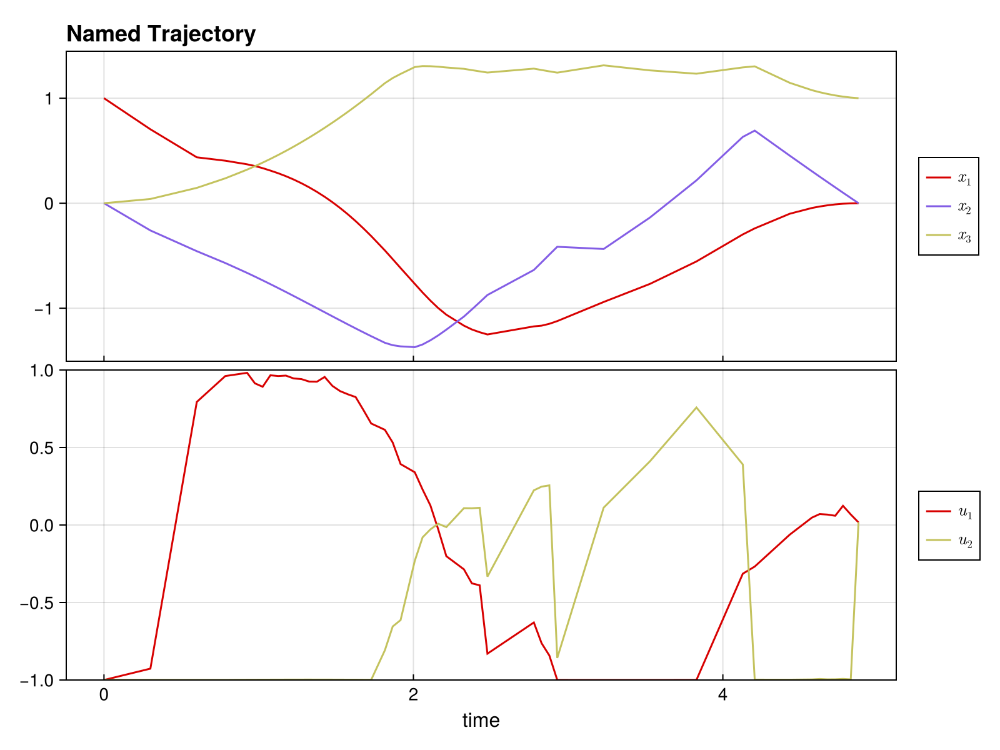

Complete Example: Time-Optimal Bilinear Control
This example demonstrates solving a time-optimal trajectory optimization problem with:
- Multiple control inputs with bounds
- Free time steps (variable Δt)
- Combined objective (control effort + minimum time)
using DirectTrajOpt
using NamedTrajectories
using LinearAlgebra
using CairoMakieProblem Setup
System: 3D oscillator with 2 control inputs
\[\dot{x} = (G_0 + u_1 G_1 + u_2 G_2) x\]
Goal: Drive from [1, 0, 0] to [0, 0, 1] minimizing ∫ ||u||² dt + w·T
Constraints: -1 ≤ u ≤ 1, 0.05 ≤ Δt ≤ 0.3
Define System Dynamics
G_drift = [
0.0 1.0 0.0;
-1.0 0.0 0.0;
0.0 0.0 -0.1
]
G_drives = [
[
1.0 0.0 0.0;
0.0 0.0 0.0;
0.0 0.0 0.0
],
[
0.0 0.0 0.0;
0.0 0.0 1.0;
0.0 1.0 0.0
],
]
G = u -> G_drift + sum(u .* G_drives)#2 (generic function with 1 method)Create Trajectory
N = 50
x_init = [1.0, 0.0, 0.0]
x_goal = [0.0, 0.0, 1.0]
x_guess = hcat([x_init + (x_goal - x_init) * (k/(N-1)) for k = 0:(N-1)]...)
traj = NamedTrajectory(
(x = x_guess, u = 0.1 * randn(2, N), Δt = fill(0.15, N));
timestep = :Δt,
controls = (:u, :Δt),
initial = (x = x_init,),
final = (x = x_goal,),
bounds = (u = 1.0, Δt = (0.05, 0.3)),
)N = 50, (x = 1:3, u = 4:5, → Δt = 6:6)Build and Solve Problem
integrator = BilinearIntegrator(G, :x, :u, traj)
obj = (QuadraticRegularizer(:u, traj, 1.0) + 0.5 * MinimumTimeObjective(traj, 1.0))
prob = DirectTrajOptProblem(traj, obj, integrator)
probDirectTrajOptProblem
Trajectory
Timesteps: 50
Duration: 7.35
Knot dim: 6
Variables: x (3), u (2), Δt (1)
Controls: u, Δt
Objective (2 terms)
1.0 * QuadraticRegularizer on :u (R = [1.0, 1.0], all)
0.5 * MinimumTimeObjective (D = 1.0)
Dynamics (1 integrators)
BilinearIntegrator: :x = exp(Δt G(:u)) :x (dim = 3)
Constraints (4 total: 2 equality, 2 bounds)
EqualityConstraint: "initial value of x"
EqualityConstraint: "final value of x"
BoundsConstraint: "bounds on u"
BoundsConstraint: "bounds on Δt"solve!(prob; max_iter = 50) initializing optimizer...
building evaluator: 1 integrators, 0 nonlinear constraints
dynamics constraints: 147, nonlinear constraints: 0
integrator 1 jacobian structure: 0.383s
jacobian structure: 1764 nonzeros (0.409s)
integrator 1 hessian structure: 0.021s
computing objective hessian structure (CompositeObjective)...
sub-objective 1 (QuadraticRegularizer): 0.38s
sub-objective 2 (MinimumTimeObjective): 0.007s
objective hessian structure: 0.448s
hessian structure: 2814 nonzeros (0.47s)
linear index maps built (0.004s)
evaluator ready (total: 1.034s)
evaluator created (1.622s)
NL constraint bounds extracted (0.029s)
NLP block data built (0.0s)
Ipopt optimizer configured (0.015s)
variables set (0.221s)
applying constraint: initial value of x
applying constraint: final value of x
applying constraint: bounds on u
applying constraint: bounds on Δt
linear constraints added: 4 (0.613s)
optimizer initialization complete (total: 2.532s)
******************************************************************************
This program contains Ipopt, a library for large-scale nonlinear optimization.
Ipopt is released as open source code under the Eclipse Public License (EPL).
For more information visit https://github.com/coin-or/Ipopt
******************************************************************************
This is Ipopt version 3.14.19, running with linear solver MUMPS 5.8.2.
Number of nonzeros in equality constraint Jacobian...: 1746
Number of nonzeros in inequality constraint Jacobian.: 0
Number of nonzeros in Lagrangian Hessian.............: 2748
Total number of variables............................: 294
variables with only lower bounds: 0
variables with lower and upper bounds: 150
variables with only upper bounds: 0
Total number of equality constraints.................: 147
Total number of inequality constraints...............: 0
inequality constraints with only lower bounds: 0
inequality constraints with lower and upper bounds: 0
inequality constraints with only upper bounds: 0
iter objective inf_pr inf_du lg(mu) ||d|| lg(rg) alpha_du alpha_pr ls
0 3.6846487e+00 1.48e-01 8.04e-02 0.0 0.00e+00 - 0.00e+00 0.00e+00 0
1 2.7216131e+00 1.31e-01 5.43e-01 -4.0 1.62e+00 - 1.49e-01 1.17e-01f 1
2 2.1397297e+00 1.16e-01 2.24e+00 -0.9 2.30e+00 - 2.28e-01 1.17e-01h 1
3 1.9288225e+00 1.02e-01 6.86e+00 -0.8 4.06e+00 0.0 2.52e-01 1.14e-01h 1
4 1.9392685e+00 1.01e-01 9.78e+00 0.1 1.80e+01 0.4 3.87e-02 1.36e-02h 1
5 1.8150807e+00 9.26e-02 1.18e+02 -0.4 2.18e+00 0.9 7.35e-01 8.27e-02h 1
6 1.8476716e+00 9.09e-02 1.16e+02 0.5 1.43e+01 0.4 3.40e-02 2.51e-02f 1
7 1.8386262e+00 8.78e-02 1.51e+02 -4.0 3.42e+00 0.8 1.66e-01 3.18e-02h 1
8 1.7460428e+00 7.91e-02 7.99e+02 -0.0 3.22e+00 1.2 1.00e+00 1.09e-01h 1
9 1.9971595e+00 7.76e-02 1.07e+03 1.4 1.52e+01 - 3.98e-01 5.48e-02f 1
iter objective inf_pr inf_du lg(mu) ||d|| lg(rg) alpha_du alpha_pr ls
10 2.3351476e+00 1.27e-01 7.58e+02 -4.0 5.00e+00 - 5.98e-03 1.17e-01h 1
11 2.3305115e+00 1.25e-01 5.85e+04 1.8 2.80e+00 3.5 4.98e-01 1.66e-02h 1
12 2.5231271e+00 1.15e-01 6.13e+04 2.9 6.54e+00 3.0 7.40e-02 4.91e-02f 1
13 2.5326725e+00 1.15e-01 9.02e+04 1.8 2.64e+00 4.3 7.01e-02 2.29e-02h 1
14 2.5641999e+00 1.09e-01 2.20e+06 2.5 2.41e+00 4.7 1.00e+00 4.72e-02h 1
15 2.6196121e+00 1.02e-01 1.91e+06 2.9 3.87e+00 5.2 3.75e-02 6.40e-02h 1
16 2.6355859e+00 1.00e-01 2.22e+06 2.9 4.04e+00 5.6 7.02e-02 1.99e-02h 1
17 2.6599447e+00 9.72e-02 1.14e+07 2.9 3.46e+00 6.0 4.09e-01 2.90e-02h 1
18 2.6769926e+00 9.50e-02 1.24e+07 2.9 3.26e+00 6.4 4.49e-02 2.26e-02h 1
19 2.6857880e+00 9.32e-02 1.21e+07 2.6 1.12e+01 6.0 5.04e-03 1.90e-02h 1
iter objective inf_pr inf_du lg(mu) ||d|| lg(rg) alpha_du alpha_pr ls
20 2.6868044e+00 9.30e-02 1.57e+07 2.9 1.39e+00 6.4 9.66e-02 1.74e-03h 1
21 2.7570983e+00 8.46e-02 1.48e+07 2.9 3.08e+00 5.9 4.53e-02 9.07e-02h 1
22 2.7583438e+00 8.44e-02 1.44e+07 2.9 2.39e+00 6.3 2.81e-01 1.67e-03h 1
23 2.8130033e+00 7.68e-02 4.33e+06 2.9 2.17e+00 5.9 5.33e-01 9.05e-02h 1
24 2.8161540e+00 7.59e-02 3.53e+06 -3.0 1.24e+00 5.4 5.67e-02 1.18e-02h 1
25 2.8419790e+00 7.01e-02 1.86e+06 2.9 1.28e+00 6.7 8.52e-03 7.61e-02h 1
26 2.8524276e+00 6.94e-02 1.92e+06 0.8 1.27e+01 6.2 5.08e-03 1.07e-02h 1
27 2.8536609e+00 6.91e-02 4.35e+06 2.9 1.31e+00 6.7 1.75e-01 4.46e-03h 1
28 2.9394697e+00 5.80e-02 3.84e+06 2.9 1.88e+00 6.2 2.07e-03 1.60e-01f 1
29 2.9404367e+00 5.78e-02 3.45e+06 2.9 9.18e-01 6.6 4.98e-02 3.21e-03h 1
iter objective inf_pr inf_du lg(mu) ||d|| lg(rg) alpha_du alpha_pr ls
30 2.9408682e+00 5.76e-02 9.01e+06 1.8 6.47e-01 7.0 1.77e-01 3.95e-03h 1
31 2.9508174e+00 5.33e-02 7.87e+06 2.9 8.37e-01 6.6 2.68e-03 7.54e-02f 1
32 2.9572093e+00 5.07e-02 1.35e+07 2.9 6.84e-01 7.0 3.25e-01 4.81e-02h 1
33 2.9775026e+00 4.24e-02 5.26e+06 2.9 6.24e-01 7.4 7.58e-03 1.70e-01h 1
34 2.9829014e+00 3.99e-02 6.94e+06 2.9 4.75e-01 7.8 9.97e-02 5.86e-02h 1
35 2.9836702e+00 3.98e-02 7.24e+06 2.9 4.90e+00 7.4 3.07e-02 1.99e-03h 1
36 3.0077314e+00 3.08e-02 2.11e+07 2.9 6.28e-01 7.8 2.17e-02 2.30e-01h 1
37 3.0151777e+00 2.77e-02 2.30e+07 2.9 4.76e-01 8.2 2.03e-01 1.00e-01h 1
38 3.0228339e+00 2.69e-02 4.72e+07 2.9 1.98e+00 7.7 1.99e-01 3.15e-02h 1
39 3.0368516e+00 2.26e-02 4.28e+07 2.9 4.27e-01 8.2 7.86e-02 1.57e-01f 1
iter objective inf_pr inf_du lg(mu) ||d|| lg(rg) alpha_du alpha_pr ls
40 3.0369797e+00 2.26e-02 4.61e+07 2.9 5.89e-01 7.7 7.38e-02 1.34e-03h 1
41 3.0370279e+00 2.25e-02 4.57e+07 -3.2 1.56e-01 7.2 1.51e-02 3.41e-03h 1
42 3.0368204e+00 2.18e-02 4.09e+07 2.3 1.72e-01 7.6 1.34e-01 3.19e-02f 1
43 3.0362270e+00 2.04e-02 3.01e+07 2.9 1.33e-01 8.1 1.63e-01 6.71e-02f 1
44 3.0364909e+00 1.42e-02 2.17e+07 2.9 1.49e-01 7.6 6.26e-03 3.09e-01f 1
45 3.0421045e+00 5.44e-03 2.74e+07 2.9 1.05e-01 8.0 1.62e-01 1.00e+00f 1
46 3.0375998e+00 8.09e-05 1.04e+07 2.9 1.04e-02 8.4 7.25e-01 9.89e-01f 1
47 3.0375292e+00 5.96e-08 1.99e+05 1.7 4.26e-04 8.0 9.85e-01 1.00e+00f 1
48 3.0375080e+00 1.67e-09 1.84e+03 0.0 6.11e-05 7.5 1.00e+00 1.00e+00f 1
49 3.0375070e+00 7.19e-12 4.27e+01 -1.9 4.24e-06 7.0 1.00e+00 1.00e+00f 1
iter objective inf_pr inf_du lg(mu) ||d|| lg(rg) alpha_du alpha_pr ls
50 3.0375026e+00 1.65e-10 4.83e+01 -2.0 1.44e-05 6.5 1.00e+00 1.00e+00f 1
Number of Iterations....: 50
(scaled) (unscaled)
Objective...............: 3.0375025904314792e+00 3.0375025904314792e+00
Dual infeasibility......: 4.8300792998232708e+01 4.8300792998232708e+01
Constraint violation....: 1.6526924273563282e-10 1.6526924273563282e-10
Variable bound violation: 0.0000000000000000e+00 0.0000000000000000e+00
Complementarity.........: 1.0738241112354933e-02 1.0738241112354933e-02
Overall NLP error.......: 4.8300792998232708e+01 4.8300792998232708e+01
Number of objective function evaluations = 51
Number of objective gradient evaluations = 51
Number of equality constraint evaluations = 51
Number of inequality constraint evaluations = 0
Number of equality constraint Jacobian evaluations = 51
Number of inequality constraint Jacobian evaluations = 0
Number of Lagrangian Hessian evaluations = 50
Total seconds in IPOPT = 13.262
EXIT: Maximum Number of Iterations Exceeded.Visualize Solution
plot(prob.trajectory) # See NamedTrajectories.jl documentation for plotting options
Analyze Solution
x_sol = prob.trajectory.x
u_sol = prob.trajectory.u
Δt_sol = prob.trajectory.Δt
println("Solution found!")
println(" Total time: $(sum(Δt_sol)) seconds")
println(" Δt range: [$(minimum(Δt_sol)), $(maximum(Δt_sol))]")
println(" Max |u₁|: $(maximum(abs.(u_sol[1,:])))")
println(" Max |u₂|: $(maximum(abs.(u_sol[2,:])))")
println(" Final error: $(norm(x_sol[:,end] - x_goal))")Solution found!
Total time: 5.052615688364147 seconds
Δt range: [0.050077454603129914, 0.29994829771943443]
Max |u₁|: 0.999812795566592
Max |u₂|: 0.9994239989270769
Final error: 0.0Key Insights
Free time optimization: Variable Δt allows the optimizer to adjust trajectory speed, with shorter steps where control is needed and longer steps in smooth regions.
Control bounds: With time weight 0.5, controls don't fully saturate. Increase the weight to push toward bang-bang control.
Combined objectives: The + operator makes it easy to balance multiple goals.
Exercises
1. Bang-bang control: Set time weight to 5.0 - do controls saturate the bounds?
2. Fixed time: Remove Δt from controls and compare total time.
3. Add waypoint: Require passing through [0.5, 0, 0.5] at the midpoint:
constraint = NonlinearKnotPointConstraint(
x -> x - [0.5, 0, 0.5], :x, traj;
times=[div(N,2)], equality=true
)
prob = DirectTrajOptProblem(traj, obj, integrator; constraints=[constraint])4. Different goal: Try reaching [0, 1, 0] or [0.5, 0.5, 0.5]
5. Tighter bounds: Use bounds=(u = 0.5, Δt = (0.05, 0.3)) - how does time change?
This page was generated using Literate.jl.